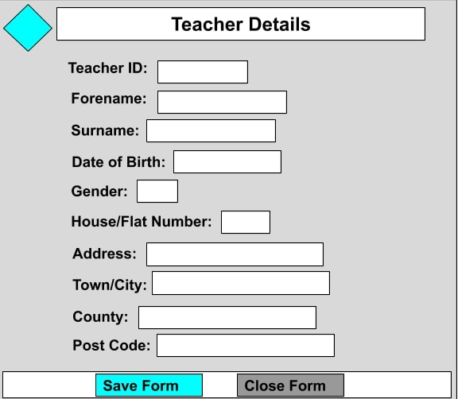
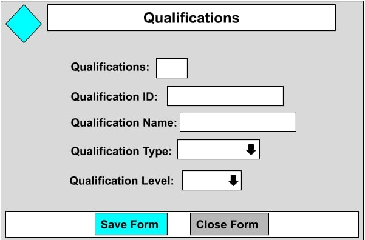
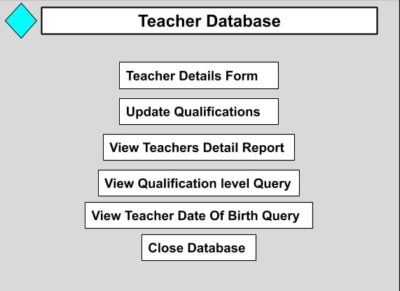

In this unit we will be design and creating a database. So far we have only designed the database and we will be creating the database later this month, When the database is created I will added it here.
Here is the report I create and made for the designing assignment of databases
The brief for this assignment is that a stamford private school is looking for a new database, we have been asked to design and create a new database for them, so that they can keep all their teachers and qualifications data.
For this assignment I got a Level 2 Merit.
If you don't wish to go through the whole document, I am going to show you the designs I created for the database.
This is the teacher form, where the teachers can fill out their details about themselves and that data will be sent to the database and saved as a record.
I have chosen a light blue grey theme for the database so it can look more attractive to look at while working on it, I will add a logo I will create to be the logo for the supposed school we are creating the database for
This is the qualification form design, similar to the teacher for design but with different questions and different ways of filling out the answers. for example: Some questions in the qualification form has a drop down option giving you specific choices to choose from.
This is the teacher database main menu design, this is where you can click on these buttons and they will take you to the teacher form, qualification form and some queries and reports.